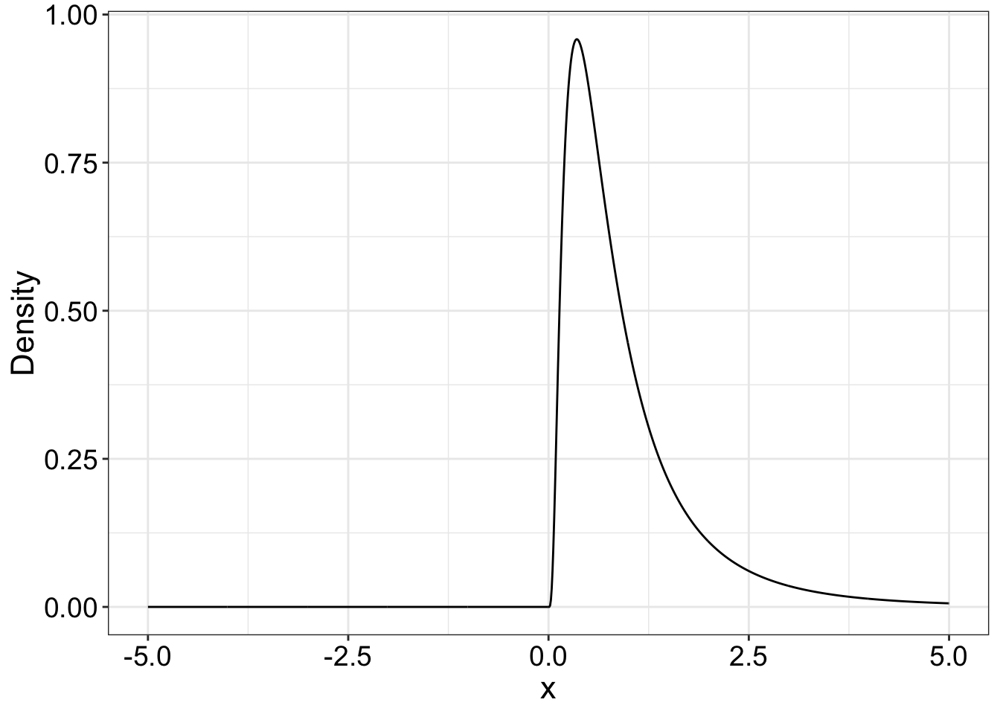

library(tibble)
library(ggplot2)
source("./code/yuen.txt") # compare trimmed means of two independent groups
source("./code/outliers.txt") # detect outliers
source("./code/onesampb.txt") # one-sample percentile bootstrap confidence interval
source("./code/theme_gar.txt") # format ggplot2 figures
# library(moments) # functions skewness(), kurtosis()How would you describe the following distribution? How would you quantify different aspects of the distribution?
loc <- 0 # location parameter of the logistic distribution
v <- 1 # target variance
sc <- sqrt(3*v) / pi # scale parameter
# see formula for logistic variance: help(dlogis)
x <- seq(-5, 5, 0.01)
nx <- length(x)
dl <- dlogis(x, loc, sc, log = FALSE)
df <- tibble(x=x, y=dl)
ggplot(df, aes(x = x, y = y)) + theme_gar +
geom_line() +
labs(y = "Density")# save figure
# ggsave(filename = "./figures/nb3_fig1.pdf", width = 20, height = 15, units = "cm")The two distributions have the same mean and variance. Notice the subtle differences in the tails and shoulders of the distributions.
dn <- dnorm(x, 0, 1)
df <- tibble(x = rep(x, 2),
y = c(dl, dn),
distribution = factor(rep(c("Logistic", "Normal"), each = nx)))
ggplot(df, aes(x = x, y = y, colour = distribution)) + theme_gar +
geom_line() +
theme(legend.position = c(0.2, 0.8)) +
labs(y = "Density")# save figure
# ggsave(filename = "./figures/nb3_fig2.pdf", width = 20, height = 15, units = "cm")m <- 1 # target mean
v <- 1 # target variance
loc <- log(m^2 / sqrt(v + m^2)) # location parameter of the logistic distribution
sh <- sqrt(log(1 + (v / m^2))) # shape parameter
# https://msalganik.wordpress.com/2017/01/21/making-sense-of-the-rlnorm-function-in-r/
x <- seq(-5, 5, 0.01)
nx <- length(x)
dl <- dlnorm(x, loc, sh)
df <- tibble(x=x, y=dl)
ggplot(df, aes(x = x, y = y)) + theme_gar +
geom_line() +
labs(y = "Density")
# save figure
# ggsave(filename = "./figures/nb3_fig3.pdf", width = 20, height = 15, units = "cm")The two distributions have the same mean and variance!
dn <- dnorm(x, 1, 1)
df <- tibble(x = rep(x, 2),
y = c(dl, dn),
distribution = factor(rep(c("Lognormal", "Normal"), each = nx)))
ggplot(df, aes(x = x, y = y, colour = distribution)) + theme_gar +
geom_line() +
theme(legend.position = c(0.2, 0.8)) +
labs(y = "Density")# save figure
# ggsave(filename = "./figures/nb3_fig4.pdf", width = 20, height = 15, units = "cm")To look at the effects of outliers, we consider a small sample, introduce an outlier and increase its size progressively.
set.seed(21) # reproducible results
n <- 10
samp <- rnorm(n, 8, 2)
samp <- c(samp, 17)
samp_mat <- matrix(NA, nrow = 12, ncol = 7)
mean_res <- vector(mode = "numeric", length = 7)
median_res <- vector(mode = "numeric", length = 7)
tmean_res <- vector(mode = "numeric", length = 7)
ci_md_pb <- matrix(NA, nrow = 2, ncol = 7)
ci_tm_pb <- matrix(NA, nrow = 2, ncol = 7)
tr <- 0.2 # amount of trimming
for(C in 1:7){
todo <- c(samp, 17+C^2)
samp_mat[,C] <- todo
mean_res[C] <- mean(todo)
median_res[C] <- median(todo)
tmean_res[C] <- mean(todo, trim = tr)
ci_tm_pb[,C] <- onesampb(todo, mean, trim = tr)$ci # default to nboot = 2000
ci_md_pb[,C] <- onesampb(todo, median)$ci # default to nboot = 2000
}set.seed(777) # for reproducible jitter
# raw data
df <- tibble(res = as.vector(samp_mat),
cond = factor(rep(1:7, each = 12)))
# measure of central tendency
df2 <- tibble(res = mean_res,
cond = factor(1:7))
ggplot(df, aes(x = cond, y = res)) + theme_gar +
# scatterplots
geom_jitter(shape = 21, width = .1, colour = 'black', fill = 'grey', size = 2, alpha = 0.5) +
# sample statistic
geom_point(data = df2, aes(x=cond, y=res), size=3) +
geom_hline(yintercept = df2$res[1]) +
theme(panel.grid.minor.x = element_blank()) +
labs(x = "Conditions", y = "Values") +
ggtitle("Mean") # save figure
# ggsave(filename = "./figures/nb3_fig_outliers_m.pdf", width = 20, height = 15, units = "cm")set.seed(777) # for reproducible jitter
# raw data
df <- tibble(res = as.vector(samp_mat),
cond = factor(rep(1:7, each = 12)))
# measure of central tendency
df2 <- tibble(res = median_res,
cond = factor(1:7))
ggplot(df, aes(x = cond, y = res)) + theme_gar +
# scatterplots
geom_jitter(shape = 21, width = .1, colour = 'black', fill = 'grey', size = 2, alpha = 0.5) +
# sample statistic
geom_point(data = df2, aes(x=cond, y=res), size=3) +
geom_hline(yintercept = df2$res[1]) +
theme(panel.grid.minor.x = element_blank()) +
labs(x = "Conditions", y = "Values") +
ggtitle("Median") # save figure
# ggsave(filename = "./figures/nb3_fig_outliers_md.pdf", width = 20, height = 15, units = "cm")set.seed(777) # for reproducible jitter
# raw data
df <- tibble(res = as.vector(samp_mat),
cond = factor(rep(1:7, each = 12)))
# measure of central tendency
df2 <- tibble(res = tmean_res,
cond = factor(1:7))
ggplot(df, aes(x = cond, y = res)) + theme_gar +
# scatterplots
geom_jitter(shape = 21, width = .1, colour = 'black', fill = 'grey', size = 2, alpha = 0.5) +
# sample statistic
geom_point(data = df2, aes(x=cond, y=res), size=3) +
geom_hline(yintercept = df2$res[1]) +
theme(panel.grid.minor.x = element_blank()) +
labs(x = "Conditions", y = "Values") +
ggtitle("20% trimmed mean") # save figure
# ggsave(filename = "./figures/nb3_fig_outliers_tm.pdf", width = 20, height = 15, units = "cm")set.seed(777) # for reproducible jitter
# raw data
df <- tibble(res = as.vector(samp_mat),
cond = factor(rep(1:7, each = 12)))
# mean + confidence intervals
df2 <- tibble(res = median_res,
cond = factor(1:7),
ci_low = ci_md_pb[1,],
ci_up = ci_md_pb[2,])
ggplot(df, aes(x = cond, y = res)) + theme_gar +
# scatterplots
geom_jitter(shape = 21, width = .1, colour = 'black', fill = 'grey', size = 2, alpha = 0.5) +
geom_hline(yintercept = df2$ci_low[1], linetype = 'dashed') +
geom_hline(yintercept = df2$ci_up[1], linetype = 'dashed') +
# confidence intervals
geom_errorbar(data = df2, aes(x=cond, ymin=ci_low, ymax=ci_up),
width=.05, size=0.75) +
geom_point(data = df2, aes(x=cond, y=res), size=3) +
theme(panel.grid.minor.x = element_blank()) +
labs(x = "Conditions", y = "Values") +
ggtitle("Median: bootstrap CI") # save figure
# ggsave(filename = "./figures/nb3_fig_outliers_md_pbci.pdf", width = 20, height = 15, units = "cm")set.seed(777) # for reproducible jitter
# raw data
df <- tibble(res = as.vector(samp_mat),
cond = factor(rep(1:7, each = 12)))
# mean + confidence intervals
df2 <- tibble(res = tmean_res,
cond = factor(1:7),
ci_low = ci_tm_pb[1,],
ci_up = ci_tm_pb[2,])
ggplot(df, aes(x = cond, y = res)) + theme_gar +
# scatterplots
geom_jitter(shape = 21, width = .1, colour = 'black', fill = 'grey', size = 2, alpha = 0.5) +
geom_hline(yintercept = df2$ci_low[1], linetype = 'dashed') +
geom_hline(yintercept = df2$ci_up[1], linetype = 'dashed') +
# confidence intervals
geom_errorbar(data = df2, aes(x=cond, ymin=ci_low, ymax=ci_up),
width=.05, size=0.75) +
geom_point(data = df2, aes(x=cond, y=res), size=3) +
theme(panel.grid.minor.x = element_blank()) +
labs(x = "Conditions", y = "Values") +
ggtitle("20% trimmed mean: bootstrap CI") # save figure
# ggsave(filename = "./figures/nb3_fig_outliers_tm_pbci.pdf", width = 20, height = 15, units = "cm")tr<-.2
xv<-seq(-4,4,0.01)
yv<-dnorm(xv)
plot(xv,yv,type="l")
zval<-qnorm(tr, mean = 0, sd = 1, lower.tail = TRUE, log.p = FALSE)
polygon(c(xv[xv<=zval],zval),c(yv[xv<=zval],yv[xv==-4]),col=5)
polygon(c(xv[xv>=-zval],-zval),c(yv[xv>=-zval],yv[xv==4]),col=5)tr<-.2
xv<-seq(0.01,4,0.01)
yv<-df(xv,6,18) #fx<-dlnorm(x)
plot(xv,yv,type="l")
zval<-qf(tr,6,18)
polygon(c(xv[xv<=zval],zval),c(yv[xv<=zval],yv[xv==0.01]),col=5)
zval<-qf(1-tr,6,18)
polygon(c(xv[xv>=zval],zval),c(yv[xv>=zval],yv[xv==4]),col=5)We mix two normal distributions. The resulting, contaminated normal distribution, on its own, looks normal, but has larger variance
alpha <- 0.1 # probability of sampling from population 2
sd1 <- 1 # standard deviation for population 1
sd2 <- 3
x <- seq(-9, 9, 0.1) # x axis values
n <- length(x)
pdf1 <- dnorm(x, 0, sd1) # probability density function for population 1
pdf2 <- dnorm(x, 0, sd2) # probability density function for population 2
pdfc <- (1- alpha)*pdf1 + alpha*pdf2 # contaminated normal
df <- tibble(x = rep(x, 3),
y = c(pdf1, pdf2, pdfc),
population = factor(c(rep("sd = 1",n),rep("sd = 3",n),rep("Mixture",n))))
# preserve order of factor levels
df$population <- as.character(df$population)
df$population <- factor(df$population, levels=unique(df$population))
ggplot(df, aes(x=x, y=y, colour = population)) + theme_gar +
geom_line() +
scale_x_continuous(breaks = seq(-10, 10, 2)) +
theme(axis.text = element_text(size = 12),
axis.title = element_text(size = 14)) +
labs(y = "Density")set.seed(21) # reproducible example
n <- 10000 # sample size
m <- 0 # population mean
sd.vec <- sample(c(sd1,sd2), n, replace=TRUE, prob=c(1-alpha, alpha)) # vector of random sd values
samp.c <- rnorm(n, m, sd.vec) # contaminated sample
samp1 <- rnorm(n, m, sd1) # normal sample 1
samp2 <- rnorm(n, m, sd2) # normal sample 2var(samp1)## [1] 1.044602var(samp2)## [1] 9.050612var(samp.c)## [1] 1.775634m1 <- 0
m2 <- 1
alpha <- 0.1 # probability of sampling from population 2
sd1 <- 1 # standard deviation for population 1
sd2 <- 3
x <- seq(-9, 9, 0.1) # x axis values
n <- length(x)
# population 1
pdf1a <- dnorm(x, m1, sd1)
pdf1b <- dnorm(x, m1, sd2)
pdf1 <- (1- alpha)*pdf1a + alpha*pdf1b # contaminated normal
# population 2
pdf2a <- dnorm(x, m2, sd1)
pdf2b <- dnorm(x, m2, sd2)
pdf2 <- (1- alpha)*pdf2a + alpha*pdf2b # contaminated normal
df <- tibble(x = rep(x, 2),
y = c(pdf1, pdf2),
population = factor(c(rep("m = 0",n),rep("m = 1",n))))
# preserve order of factor levels
df$population <- as.character(df$population)
df$population <- factor(df$population, levels=unique(df$population))
ggplot(df, aes(x=x, y=y, colour = population)) + theme_gar +
geom_line() +
scale_x_continuous(breaks = seq(-10, 10, 2)) +
theme(axis.text = element_text(size = 12),
axis.title = element_text(size = 14)) +
labs(y = "Density")set.seed(21) # reproducible example
n <- 25 # sample size
m1 <- 0 # population 1 mean
m2 <- 1 # population 2 mean
alpha <- 0.1 # probability of sampling from population 2
sd1 <- 1 # standard deviation for population 1
sd2 <- 3 # standard deviation for population 2
# define simulation variables
nsim <- 10000 # number of iterations
sim.m <- vector(mode = "numeric", length = nsim) # results for t-test on means
sim.tm <- vector(mode = "numeric", length = nsim) # results for t-test on trimmed means
for(S in 1:nsim){
sd.vec <- sample(c(sd1,sd2), n, replace=TRUE, prob=c(1-alpha, alpha)) # vector of random sd values
samp1 <- rnorm(n, m1, sd.vec) # contaminated sample 1
samp2 <- rnorm(n, m2, sd.vec) # contaminated sample 2
sim.m[S] <- t.test(samp1, samp2)$p.value <= 0.05
sim.tm[S] <- yuen(samp1, samp2)$p.value <= 0.05 # default to 20% trimming
}
mean(sim.m) # power of t-test on means## [1] 0.7431mean(sim.tm) # power of t-test on 20% trimmed means## [1] 0.8212m1 <- 0
m2 <- 1
sd <- 1 # standard deviation for the two populations
x <- seq(-9, 9, 0.1) # x axis values
n <- length(x)
# population 1
pdf1 <- dnorm(x, m1, sd)
# population 2
pdf2 <- dnorm(x, m2, sd)
df <- tibble(x = rep(x, 2),
y = c(pdf1, pdf2),
population = factor(c(rep("m = 0",n),rep("m = 1",n))))
# preserve order of factor levels
df$population <- as.character(df$population)
df$population <- factor(df$population, levels=unique(df$population))
ggplot(df, aes(x=x, y=y, colour = population)) + theme_gar +
geom_line() +
scale_x_continuous(breaks = seq(-10, 10, 2)) +
theme(axis.text = element_text(size = 12),
axis.title = element_text(size = 14)) +
labs(y = "Density")set.seed(21) # reproducible example
n <- 25 # sample size
m1 <- 0 # population 1 mean
m2 <- 1 # population 2 mean
sd <- 1 # standard deviation
# define simulation variables
nsim <- 10000 # number of iterations
sim.m <- vector(mode = "numeric", length = nsim) # results for t-test on means
sim.tm <- vector(mode = "numeric", length = nsim) # results for t-test on trimmed means
for(S in 1:nsim){
samp1 <- rnorm(n, m1, sd) # normal sample 1
samp2 <- rnorm(n, m2, sd) # normal sample 2
sim.m[S] <- t.test(samp1, samp2)$p.value <= 0.05
sim.tm[S] <- yuen(samp1, samp2)$p.value <= 0.05 # default to 20% trimming
}
mean(sim.m) # power of t-test on means## [1] 0.9328mean(sim.tm) # power of t-test on 20% trimmed means## [1] 0.8859The ghdist() function is used to generate random numbers from g & h distributions. All such distributions have a median of zero. The parameter g controls the asymmetry of the distribution, while the parameter h controls the thickness of the tails. g = h = 0 corresponds to a normal distribution.
# code from Rallfun-v35.txt
ghdist<-function(n,g=0,h=0){
#
# generate n observations from a g-and-h dist.
#
x<-rnorm(n)
if (g>0){
ghdist<-(exp(g*x)-1)*exp(h*x^2/2)/g
}
if(g==0)ghdist<-x*exp(h*x^2/2)
ghdist
}gseq <- seq(0, 1, 0.1) # sequence of g parameters
ng <- length(gseq)
svar <- vector(mode = "numeric", length = ng) # vector of sample variances
n <- 10000 # sample size
h <- 0 # keep h constant
for(G in 1:ng){
svar[G] <- var(ghdist(n, g = gseq[G], h=h))
}
# Plot variance as a function of g
df <- tibble(var = svar, g = gseq)
ggplot(df, aes(x = g, y = var)) + theme_gar +
geom_point() +
scale_x_continuous(breaks = gseq) +
labs(y = "Variance")Crazy example:
x <- c(2,2,3,3,3,4,4,4,100000,100000)k <- 2
res <- (abs(x-mean(x)) / sd(x)) > k
res## [1] FALSE FALSE FALSE FALSE FALSE FALSE FALSE FALSE FALSE FALSE# x[res]k <- 1.5
x.md <- median(x)
x.iqr <- IQR(x) # interquartile range
# x.iqr <- quantile(x, 0.75) - quantile(x, 0.25)
out <- x > x.md + k*x.iqr | x < x.md - k*x.iqr
out## [1] FALSE FALSE FALSE FALSE FALSE FALSE FALSE FALSE TRUE TRUEUsing the boxplot function:
out <- boxplot(x, plot = FALSE)
out## $stats
## [,1]
## [1,] 2.0
## [2,] 3.0
## [3,] 3.5
## [4,] 4.0
## [5,] 4.0
##
## $n
## [1] 10
##
## $conf
## [,1]
## [1,] 3.00036
## [2,] 3.99964
##
## $out
## [1] 1e+05 1e+05
##
## $group
## [1] 1 1
##
## $names
## [1] "1"See also modified boxplot rules in Rand Wilcox’s outbox().
outbox(x)## $out.val
## [1] 1e+05 1e+05
##
## $out.id
## [1] 9 10
##
## $keep
## [1] 1 2 3 4 5 6 7 8
##
## $n
## [1] 10
##
## $n.out
## [1] 2
##
## $cl
## [1] -12498.21
##
## $cu
## [1] 20838.12k <- 2.24
(abs(x-median(x)) / mad(x)) > k## [1] FALSE FALSE FALSE FALSE FALSE FALSE FALSE FALSE TRUE TRUESee other robust outlier detection methods in:
robustbase R package [CRAN].
# to compare any estimators:
pb2gen(x, y, alpha=0.05, nboot=1000, est=median, SEED=FALSE)
# If you use SEED=TRUE, the random seed generator is set to the same starting point every time you use the function, such that for the same data, multiple calls will return exactly the same confidence intervals. I strongly recommend to always use SEED=FALSE. For reproducibility, set the seed in your code chunk instead, using set.seed().
# same as pb2gen but only to compare medians:
medpb2()
# same as pb2gen but only to compare trimmed means:
trimpb2()
# to compare variances:
comvar2()
# For robust measures of scale, use pb2gen# percentile bootstrap using any estimator:
# default to difference scores - dif=TRUE
bootdpci(x,y,est=median)
# to compare two variances:
comdvar(x,y,alpha=0.05)
# or apply one-sample functions to the pairwise differences
Guillaume A. Rousselet, 2019, University of Glasgow.